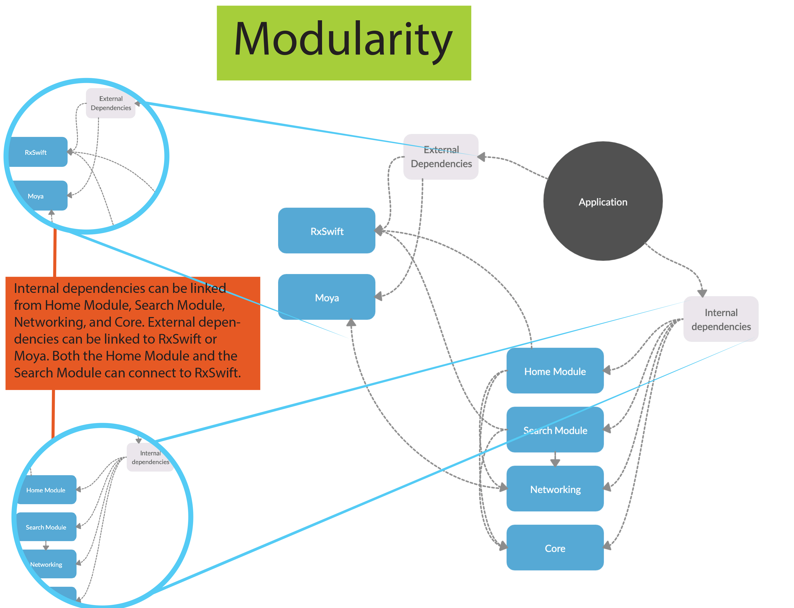
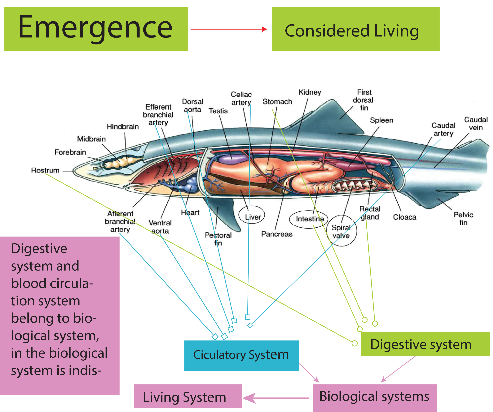
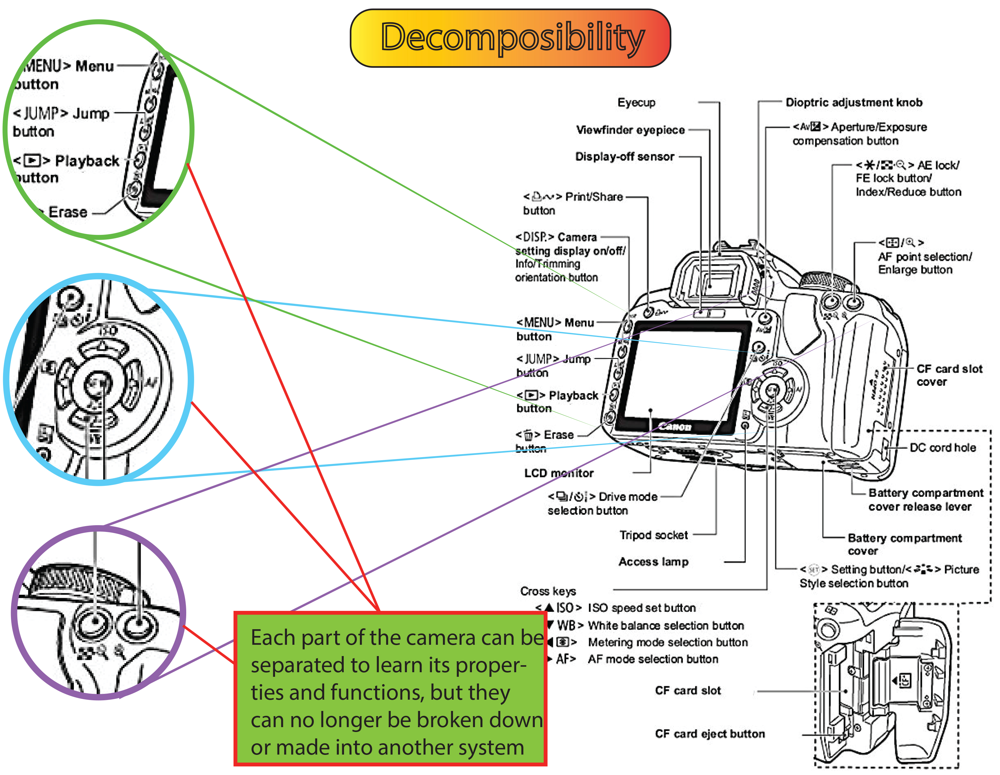

Part 2 -- Revised Diagrams with the four System Concepts applied to 4 different diagrams




Modularity: Components of a system that can be arranged in a variety of configurations or roles ( very interchangeable)
Decomposability:The point at which elements cannot be broken down any further and doing so would just mean functional obliteration.
If I take a crumb and cut it in half, I don't have two 1/2 crumbs. I now have 2 crumbs man.... -- George Carlin
Emergence: Emergence occurs when an entity is observed to have properties its parts do not have on their own. These properties or behaviors emerge only when the parts interact in a wider whole. For example, smooth forward motion emerges when a bicycle and its rider interoperate, but neither part can produce the behavior on their own.
Chaos Theory:The behavior of dynamic systems that are highly sensitive to initial conditions and can have wide-ranging outcomes and still behave within larger systems that maintain balance. Also which is popularly referred to as the butterfly effect.
-- Answer: - A system which consists of a type of mapping network which must reach the requirements of being structured and organized. A working system can either be a group of people working together or a map of outlet malls for visitors and customers. If the system is currently operational or functional, it is considered a “working” system. An example of what a working system is not, which is that it does not have or lacks details of how the supposed system operates. Another example is for a group to be considered a system, it needs to consistently stay functional and serves a purpose.
Modular: Multiple parts that fulfill a bigger purpose for an object. For instance,
using a usb to save or import information to a laptop that saves space.
Decomposability: Studying parts separately such as parts of a car or laptop.
Emergence: The study of a subject in a group or whole rather than segregated or in parts such as bees, or flocks of birds.
Chaos Theory: what seems random is actually not; almost like an illusion, such as weather like rain or heat.
Tessellation means a geometric shape is repeated over and over again, covering the plane of tiles without any gaps or overlaps. One example I found not in the reading might be the pattern of knitting and also kaleidoscope.
Modularity can be replaced according to the actual displacement, without regularity. However, Tessellation cannot be replaced, because displacement will affect the overall regularity and visual effect. Substitutable and non-substitutable, irregular and regular
Complexity is made up of things with different properties to achieve the same goal, being Uniform is things are built with the same properties to form a regular goal.